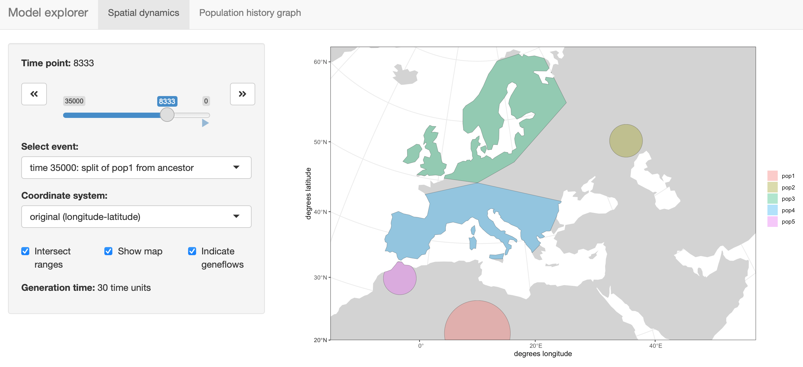
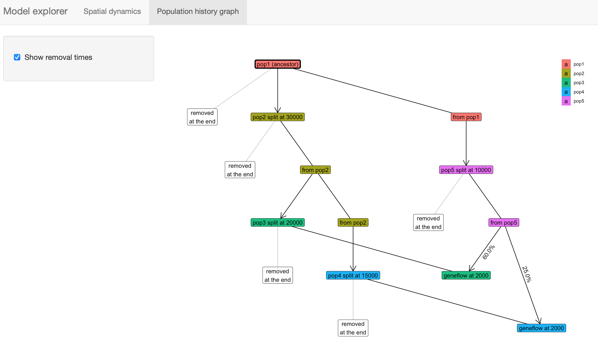

Spatio-temporal Population Genetics Simulations Using SLiM 
This software is still under development! I have been making a good progress towards the first beta version, but the package still has some way to go before being production ready.
That said, if you would like to learn more, or if you’re feeling brave and would like to test the package yourself, take a look at the tutorial. Note that getting it installed with all the geospatial dependencies can be a little bit tricky at this point (see the relevant section in the tutorial). If loading the package fails, check the error messages for missing software and install it using the package manager of your choice (on a Mac I recommend homebrew).
If you would like to stay updated with the developments:
Click on the “Watch” button on the project’s Github website.
Follow me on Twitter. I might post some updates once the software is a bit more ready.
Installation
For installation instructions, please take a look at the installation section of the tutorial. Note that you might need to install some non-R software dependencies first. At the very least, you will need the most recent version of the SLiM software (version 3.6 or later).
Example
Here is a small demonstration of what slendr is designed to do. Note that this model is not supposed to recapitulate the history of any known species and serves just for demonstration purposes.
For a more complete example that is less abstract and demonstrates the usage of the package on a model of West Eurasian history, please see the tutorial.
We’re going to simulate a demographic history of several populations, including splits and geneflow events, defining the spatial boundaries of populations as well as their changing dynamics over time. We will then feed the model defined in R into SLiM and instruct it (using a back-end SLiM script provided by this package) to simulate data based on the model specification (step 7). Finally, we will generate some visualizations to make sure that the simulation proceeded as we wanted to (steps 8 and 9).
1. Setup the spatial context (“the world” occupied by populations)
Note that in the world definition, we are explicitly stating which projected Coordinate Reference System (CRS) will be used to represent landscape features, distances in kilometers, etc.
2. Define demographic history and population boundaries
Times are given in “units before present”, distances in kilometers. Note that for easier model definition, all coordinates of are specified by the user in geographic coordinate system (longitude, latitude), but are internally represented in a projected CRS.
p1 <- population(
name = "pop1", time = 35000, N = 700,
radius = 600000, # radius of the circular range (in meters)
center = c(10, 25), # (longitude, latitude) coordinates of the center
map = map
)
p2 <- population(
name = "pop2", parent = p1, time = 30000, N = 500,
center = c(10, 25), radius = 300000
) %>%
move(
trajectory = list(c(25, 25), c(40, 30), # trajectory of movement
c(40, 40), c(50, 50)),
start = 29000, end = 25000, snapshots = 30
)
p3 <- population(
name = "pop3", parent = p2, time = 20000, N = 1000,
polygon = list(c(-10, 50), c(10, 50), c(20, 53), # polygon range
c(40, 60), c(40, 70), c(-10, 65))
)
p4 <- population(
name = "pop4", parent = p2, time = 15000, N = 800,
polygon = list(c(-10, 35), c(20, 37), c(25, 40),
c(30, 45), c(10, 50), c(-10, 45))
)
p5 <- population(
name = "pop5", parent = p1, time = 10000, N = 1000,
center = c(10, 25), radius = 300000
) %>%
move( # population migration...
trajectory = list(c(-5, 33), c(-5, 40)),
start = 9000, end = 8000,
snapshots = 20
) %>% # ... followed by expansion
expand(by = 2000000, start = 7000, end = 2000, snapshots = 10)4. Compile the model to a set of configuration files
model <- compile(
dir = "/tmp/example-model", # location of serialized model data
populations = list(p1, p2, p3, p4, p5),
geneflows = geneflows,
generation_time = 30,
competition_dist = 200e3, # interaction distances (in meters)
mate_dist = 200e3, offspring_dist = 50e3,
resolution = 10000 # how many meters per pixel?
)Compiled model is kept as an R object which can be passed to different functions, most importantly the slim() function shown below.
model
#> slendr 'model' object
#> ---------------------
#> populations: pop1, pop2, pop3, pop4, pop5
#> geneflow events: 2
#> generation time:
#> number of spatial maps: 71
#> resolution: 10000 km per pixel
#>
#> configuration files in: /private/tmp/example-model
#>
#> A detailed model specification can be found in `$splits`, `$geneflows`,
#> `$maps`, `$populations`, and other components of the model object (for
#> a complete list see `names(<model object>)`). You can also examine
#> the serialized configuration files in the model directory.5. Visualize the model
The package provides an [R shiny]-based browser app explore() for checking the model dynamics interactively and visually.
explore(model)The function has two modes:
- Plotting spatial map dynamics:

- Displaying the demographic history graph (splits and geneflow events) embedded in the specified model:

6. Run the model in SLiM (in batch mode in this case)
slim(
model, seq_length = 1, recomb_rate = 0, # single locus
save_locations = TRUE,
method = "gui" # open the model in SLiMgui
)As specified, the SLiM run will save ancestry proportions in each population over time as well as the location of every individual who ever lived.
7. Re-capitulate the SLiM run as an individual-based animation
animate(model, nframes = 200)
Note that it is possible to simulate population splits and geneflows both by “physically” moving individuals of a population from one destination to the next across space but it is also possible to do this more abstractly (in instantaneous “jumps”) in situations where this is more appropriate or where simulating accurate movement is not necessary.
In this case, we simulated the split of populations pop3 and pop4 from pop2 instantaneously, without explicitly tracing their movement. Compare this to the split of pop5 from pop1, where we defined the population movement explicitly.